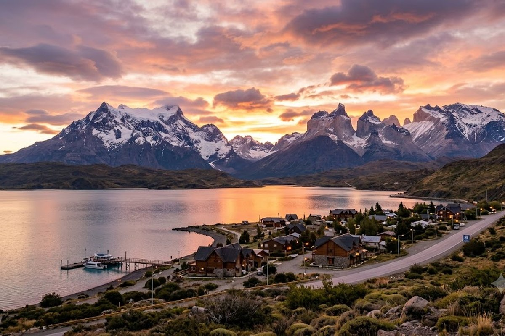
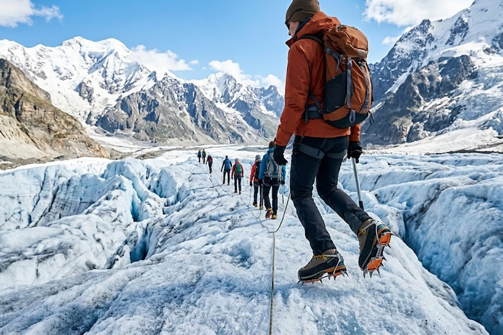
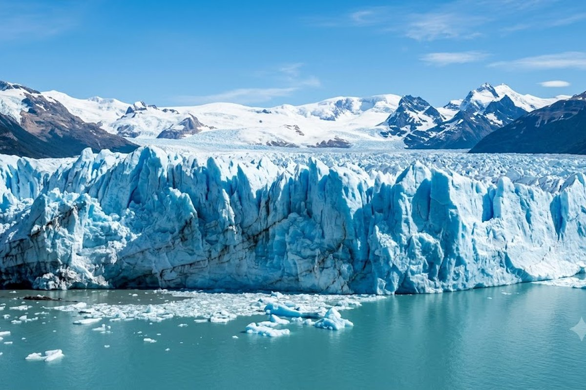
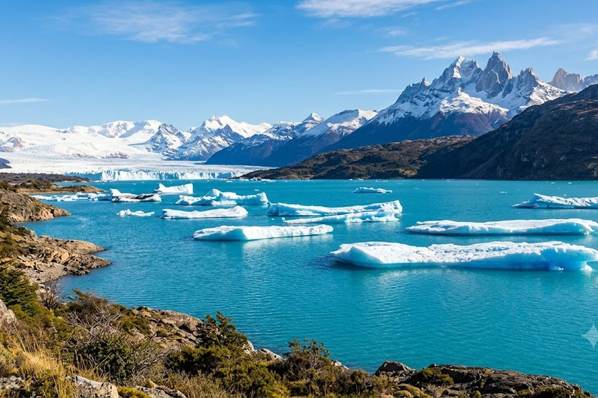

El glaciar más famoso del mundo avanza 2 metros por día y ruge como un trueno cuando se rompe. Esto no se ve en ningún otro lugar del planeta.
El Calafate existe porque existe el Perito Moreno. Y el Perito Moreno existe para recordarte que hay fuerzas en este planeta que no tienen escala humana. El glaciar más visitado de la Patagonia tiene 60 metros de pared de hielo azul sobre el lago Argentino, avanza 2 metros por día y cada tanto se rompe con un estruendo que sacude el aire. Verlo es una experiencia que se lleva para siempre.



Las pasarelas frente al glaciar permiten verlo de frente, de costado y desde arriba. La entrada al Parque Nacional Los Glaciares incluye el acceso.
Caminata con crampones sobre el glaciar. Se ven grietas, cuevas y el azul profundo del hielo milenario. Apto para personas en buena forma física.
Excursión en barco por el Lago Argentino, el más grande de Argentina. Pasa frente al Upsala y el Spegazzini, glaciares menos conocidos pero igual de impactantes.
Las estancias tradicionales ofrecen asado patagónico, avistaje de cóndores y un contacto real con la vida gaucha en la estepa.
Patrimonio Mundial UNESCO desde 1981. El parque tiene 47 glaciares y es la tercera reserva de agua dulce del planeta.
A 3 horas de El Calafate, El Chaltén es la capital del trekking argentina. Se puede hacer como excursión de día desde Calafate.
El Perito Moreno se puede ver sin hacer trekking — las pasarelas gratuitas son épicas. Pero si querés el momento "wow" extra, reservá el Mini Trekking o el Big Ice con anticipación desde Argentina: los cupos se agotan rápido en temporada alta. Y llevá capas: en el glaciar hace 10 grados menos que en el pueblo.
Combo clásico patagónico: El Calafate (3-4 noches) + El Chaltén (2-3 noches) + Ushuaia (3 noches) — el circuito completo del sur argentino. Lo armamos en 9-10 días con vuelos internos incluidos.
¿El Perito Moreno se puede ver sin hacer trekking?
Sí, y es igual de impresionante. Las pasarelas gratuitas dan acceso a múltiples miradores frente al glaciar. El trekking sobre hielo es una experiencia adicional para quienes quieren subirse al glaciar.
¿Cuándo es la mejor época para ir?
Octubre a marzo es la temporada ideal: días largos y todos los circuitos abiertos. Junio-agosto tiene menos gente y precios más bajos, pero hace mucho frío y algunos senderos están cerrados.
¿Cuántos días necesito solo en El Calafate?
Con 3 noches ves el Perito Moreno bien y podés hacer una excursión adicional (trekking en hielo o navegación). Si querés sumar El Chaltén como excursión, necesitás 4 noches mínimo.
¿Conviene combinar con El Chaltén?
Sí, están a 3 horas por ruta y se complementan perfecto: Calafate es glaciares y lago, Chaltén es montaña y trekking. Se puede ir a Chaltén en excursión de día o quedarse 2-3 noches.
Contanos tus fechas y armamos el paquete patagónico completo.
💬 Consultar con Gemicheck